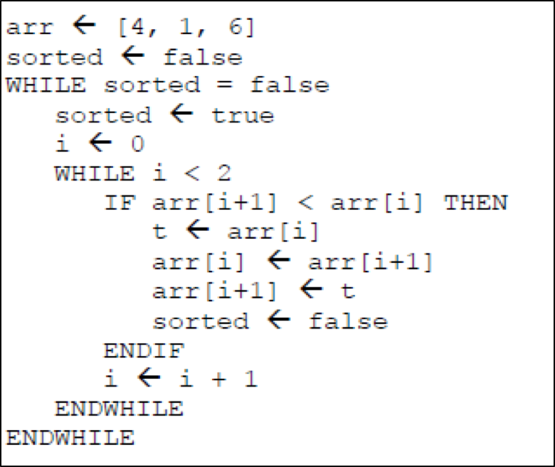

3.1.2 Efficiency of Algorithms
Table of Contents
1 Efficiency of Algorithms
Learn It: What is Efficiency?
Efficiency - A measure to compare two different algorithms that solve the same problem. A more efficient algorithm is a better choice. Efficiency can be measured in a number of different ways, but at GCSE level, you only need to worry about TIME efficiency. An algorithm that can be executed in 20 instructions, is more efficient than one that takes 30 instructions.
- The following trinket windows demonstrate the
efficiencyof an algorithm to solve a simple sorting problem. - These two algorithms use
different methodsto swap items in a list:- Method 1: Temporary Variable:
- Method 2: In-line place swap:
- As we can see from the two algorithms above, the first method that
uses a
temporary variableto store a list item solves the sort problem using9 lines of code. - The second method that uses the
In-line place swapto switch the list items only uses7 lines of code. - Not a huge difference, but when you are trying to solve a big
problem that involves hundreds of lines of code, being more
efficient with your code will:
- Reduce the number of lines of code,
- Be easier to debug,
- Will execute alot faster.
In the next two topics 3.1.3 and 3.1.4, we will look in more detail at comparing the efficiency of algorithms and explain how some algorithms are more efficient than others in solving the same problem.
2 Interpreting Algorithms
Learn It: Trace Tables
- In most cases with GCSE exam questions, you may be provided with an algorithm and asked what it does or what the output would be.
- So you need to be able to read and understand algorithms.
For Example
Interpreting an algorithm works best when you do so, one line at a time, as a computer would. A TRACE TABLE can and should be used to keep track of variables that change throughout the algorithm. The variables in this program are called 'number' and 'result'.
Trace Table
| loop | number | result | Explanation |
|---|---|---|---|
| 1 | 3 | 1 | In lines '1' and '2', the variables are given these values. |
| 2 | 3 | 1 | In line '3', the loop starts and will run as long as'number' is greater than '1'. |
| 3 | 3 | 3 | In line '4', 'result' is set to itself, multiplied by 'number'. '1' times '3' is '3'. |
| 4 | 2 | 3 | Line '5' says that 'number' should have '1' subtracted from it. |
| 5 | 2 | 3 | Line '6' is the end of the loop, so we go back to the start. |
| 6 | 2 | 3 | 'number' is still greater than '1', so the loop runs again. |
| 7 | 2 | 6 | Line '4', 'result' is set to itself, multiplied by 'number'. '2' times '3' is '6'. |
| 8 | 1 | 6 | Line '5' says that 'number' should have '1' subtracted from it. |
| 9 | 1 | 6 | Line '6' is the end of the loop, so we go back to the start. |
| 10 | 1 | 6 | Loop will not run again, as 'number' is not greater than '1'. so we exit the loop. |
| 11 | 1 | 6 | 'result' is displayed, which is currently '6'. |
Looking at an algorithm as a whole can be daunting, but follow it one line at a time makes it much simpler, no individual line is particularly complicated, and errors can be easily identified.
Try It: Efficiency of Algorithms
- To summarise, many problems, both simple and complex, have more than one solution.
- Consider the problem of finding the sum of the inetgers from 1 to n.
- Here are two different algorithms for solving the same problem:
Algorithm 1
 Algorithm 2
Algorithm 2
- The second algorithm is clearly much more efficient, as only one instruction is executed.
Badge It: Definitions
Silver: Answer the following questions:
- Define the term Algorithm?
- State two properties of an algorithm that could be considered when describing it as Efficient?
- Explain how a Trace Table is used to test a computer program to check for early errors?
- Upload to Algorithms - Efficiency: Silver on BourneToLearn
Badge It: Efficiency
Gold: Using Algorithm examples 1 and 2 above, answer the following:
- How many instructions are executed using each of the algorithms if n = 1000?
- Upload to Algorithms - Efficiency: Gold on BourneToLearn
Badge It: Trace Tables
Platinum: Create a Trace Table to show the outputs of the following algorithm: 
- Upload to Algorithms - Efficiency: Platinum on BourneToLearn